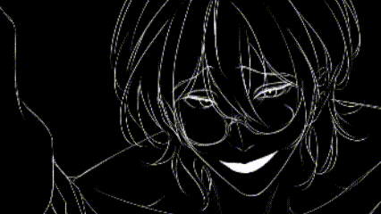
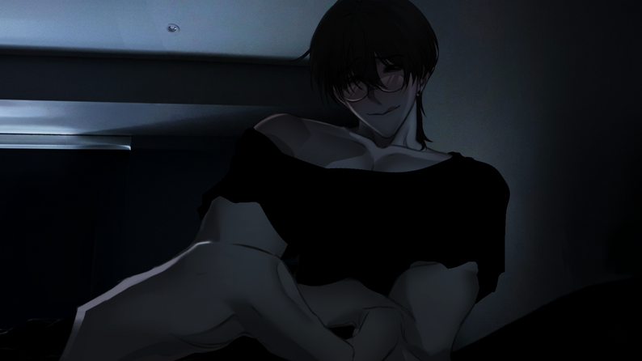
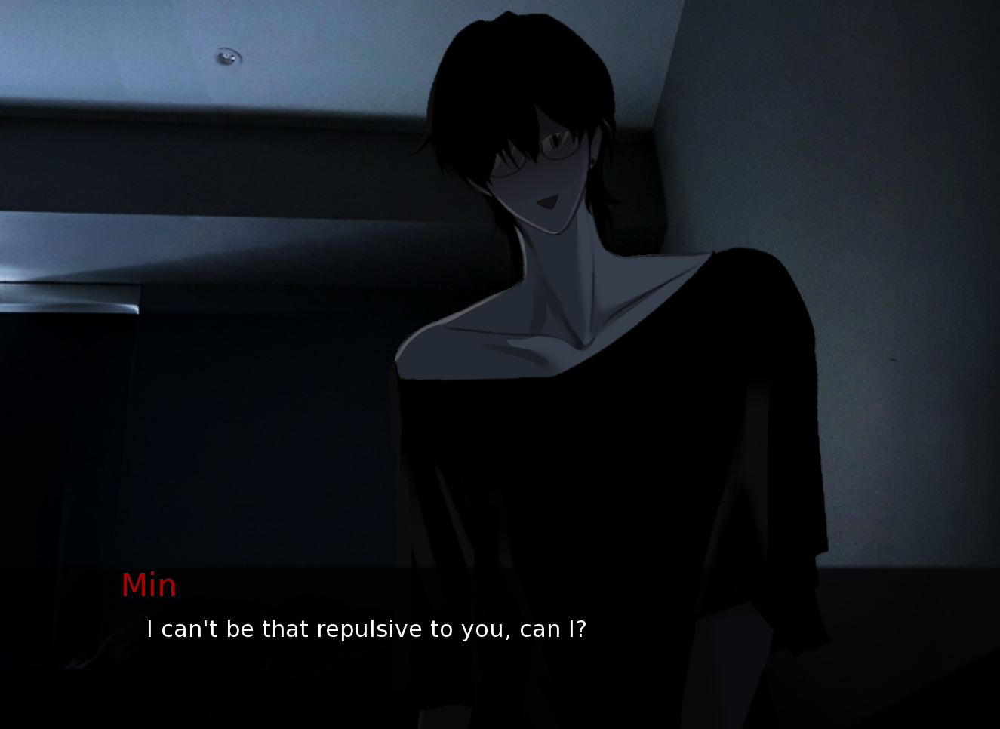
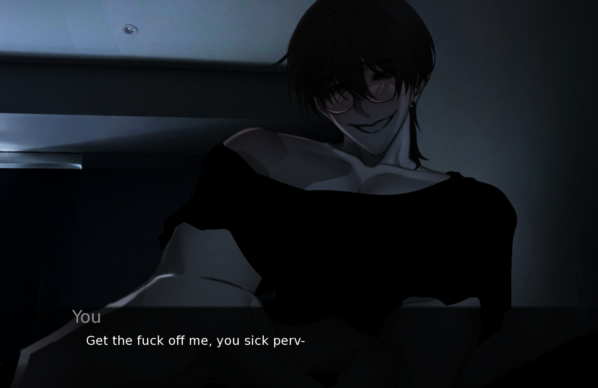
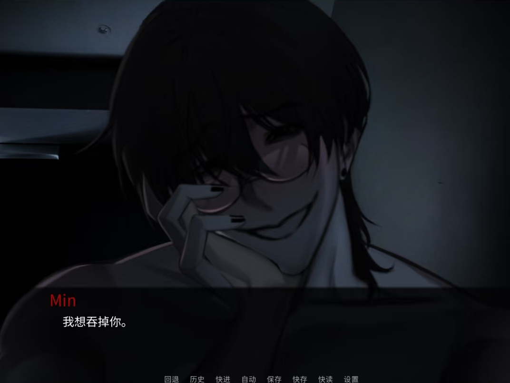
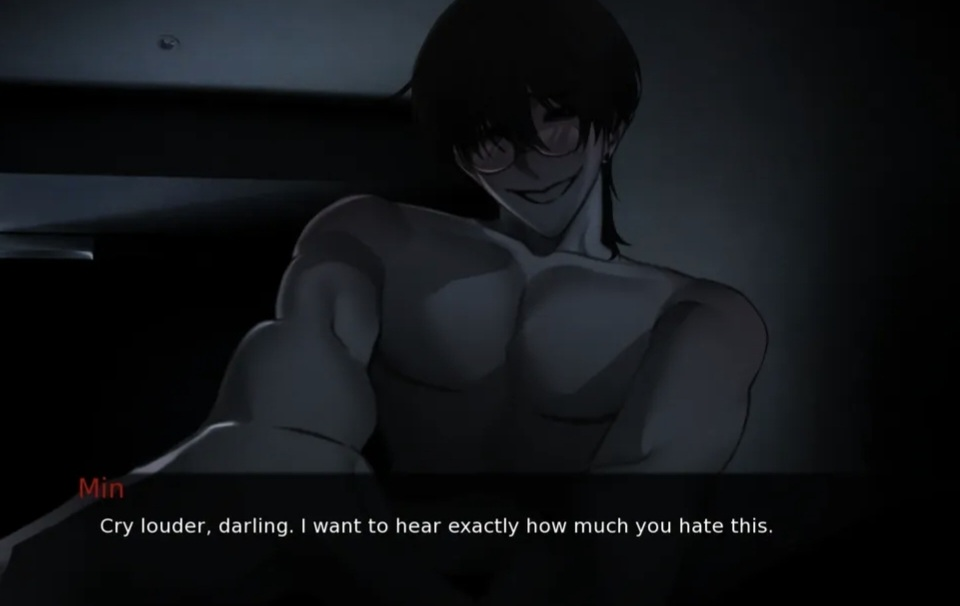

Loading SURVIVE MIN
Preparing the browser build...
First load takes a moment. Black screen? Refresh once. Headphones recommended.
Indie Horror VN · Free · No Download
SURVIVE MIN traps you in a bedroom with an ancient shapeshifting entity who talks like he knows you, watches your every move, and probably eats hearts. Pick your words carefully. Most endings kill you.
Loading SURVIVE MIN
Preparing the browser build...
First load takes a moment. Black screen? Refresh once. Headphones recommended.

SURVIVE MIN is a free yandere psychological horror visual novel. No combat, no inventory, no escape — just a conversation with Min, a shapeshifting entity who has decided you belong to him. Nine endings. Most of them kill you. The true ending takes roughly 20 minutes to reach, less if you're good at reading people.

First run: don't hunt the guide. Don't optimize. Answer like you mean it and see where SURVIVE MIN puts you. The first ending lands better when you treat it as data, not a fail state. Every death in SURVIVE MIN leaks information about Min what sets him off, what calms him, what he's actually asking for under the words. Once you've got a read on him, go again. Be warmer. Be colder. Say less. Push back. The story is short enough that replaying SURVIVE MIN doesn't grind an hour per run and the same lines hit your ear differently once you know what Min is capable of.
No guides. No walkthroughs. No pausing to check what someone on Reddit picked. SURVIVE MIN is short — you can afford one honest run where you answer the way you actually would. That first ending, whatever it is, tells you something about the game's emotional map. Treat it as a baseline. You just met Min. Now the real game starts.
Go the opposite direction. If you were guarded, open up. If you were warm, pull back. SURVIVE MIN reacts to tone shifts more than individual choices — a pattern of warmth followed by one cold line reads differently than consistent distance. See what breaks and what holds.
By now you know Min's moods. You know which lines are tests and which are genuine. Pick an ending you haven't seen and trace the route backward — what needs to happen in act one for act three to land there? SURVIVE MIN is tight enough that every branch connects. Nothing is filler.
After five or six endings, if two or three are still locked, pull up a route map from itch.io. You've earned it. The true ending Domesticated means more when you've died enough to understand what you're surviving. A walkthrough shortcut past all those deaths skips the part of SURVIVE MIN that makes the ending work.
What you're surviving here isn't a monster — it's a conversation where every answer gets weighed, turned over, and read back to you in a way you didn't intend.
A warm choice might shift the room toward something gentler. A guarded one might read as cold. A line that felt safe in your head lands like a deflection when Min repeats it back to you three beats later. He overreads everything. That's not flavor text — that's the mechanic. The game hands you a bedroom, puts Min in it, and lets the walls close in at their own pace. By the time you notice the room has shrunk, it's already too small to breathe in.

Players who've burned through the genre say the same thing: Min isn't "yandere lite." He doesn't wink at the camera or soften his edges for comfort. The game respects the trope enough to make it genuinely unsettling — then trusts you to handle it. That's rare, and it's why SURVIVE MIN spread on TikTok and itch.io within days of release.
Min isn't fully voiced — which makes the moments where he does speak land harder. A single whispered line, a sudden laugh, a shift in tone mid-sentence. Players routinely mention the voice work as the thing that gave them chills. It's used sparingly, and that restraint is what makes it work.

SURVIVE MIN has 1 True, 1 Good, 1 Bad, and 6 Death endings. Most runs end with you dead. Each death teaches you something about Min that the previous one didn't — a tone he hates, a silence he misreads, a kind of warmth he punishes. The corpses are the tutorial. The true ending only becomes visible once you've stacked enough of them to understand what you're surviving.
You saw every version of Min — playful, murderous, desperate, cruel — and stayed steady through all of them. He has no reason to break you anymore. The door opens. What walks out with you isn't quite the monster who walked in.
You survive. Min decides you're worth keeping around — less as a trophy, more as something he doesn't want to lose. It feels like a draw, not a victory. You held your ground without swinging first.
You live, technically. But something fundamental broke between you and Min. The room stays locked. The conversation keeps going. Some survivals are just slower deaths with better lighting.
You treated him like a threat from the first line. He noticed. Cold responses turn the room hostile fast — Min doesn't forgive being treated like a monster, even when he's acting like one.
You got too close, too fast. Warmth without caution reads as surrender to Min. Affection becomes consumption. Players call this one poetic. They're not wrong.
You said nothing when the moment demanded an answer. Min fills silence with his own assumptions — none of them generous. Hesitation kills as surely as the wrong words.
He takes what he's wanted since the door locked. This is the ending people warn about in itch.io comments. Not graphically explicit, but psychologically — it lands where you live.
You thought there was a correct answer — a sequence of right choices that unlocks survival. There isn't. Min reads overconfidence as dishonesty, and dishonesty makes him curious about what you're hiding.
You tried to escape. The door doesn't open. The window doesn't break. Min doesn't chase you — he doesn't have to. There's nowhere to go. Turning your back just tells him the conversation is over.
~1 hour per run. 9 endings. 1 tab. Every death reshuffles what you think you know about Min. Pace yourself — the endings aren't going anywhere, but your first blind run only happens once.




Full SURVIVE MIN gameplay — watch before your first run
SURVIVE MIN mood shifts & tone preview
This was incredible. Excellent writing, gorgeous art, and the little voiced parts gave me such a chill. I've never been so rage-baited into loving a character. Min is precious and terrifying in equal measure and I need everyone to experience that whiplash firsthand.
It's been so long since I've found a yandere that wasn't watered down to please everyone. Min challenges you in ways few visual novel characters do. Thank you for respecting the yandere trope and not turning Min into a diluted version of it. The constant tension makes the whole experience genuinely engaging.
One of my favorite sweetly messed-up games. Min is only one apple tall after light exposure and that image lives in my head rent-free. Consumed by Love is my favorite ending — this is a truly poetic game hiding inside a horror VN shell.
First run and I managed to get the true ending. I LOVE MIN, they're such a precious little thing. The game makes you work for that affection though — you have to earn the version of Min that doesn't want to kill you, and that's what makes it stick.
I got ALL the bad endings before finally reaching the true ending. Every death taught me something new about Min — a tone he hates, a silence he misreads, a kind of warmth he punishes. By the time I reached Domesticated it actually meant something. Absolutely loved this game.
Holy peak. This VN is so amazing — Min's snarky personality, the voice acting, the fact that this was made in THREE DAYS. I'm so glad the game didn't hold back the actual yandere factor. Stranger Danger had me laughing out loud, then genuinely upset in a way I didn't expect from a three-day game.
Headphones intensify the experience. If SURVIVE MIN isn't the right mood tonight, bookmark the page and come back when you're ready. The game rewards slow, deliberate reading — not endurance.
A short horror visual novel that runs entirely in your browser — no download, no install. SURVIVE MIN drops you into a dark bedroom with an entity named Min and asks you to survive one conversation. No combat. No inventory puzzles. Just you, your words, and someone who watches every pause a beat too long.
Click or tap to advance text. When dialogue choices appear, pick one. That's it. On desktop, right-click opens the save menu, middle-click hides the UI, and holding Ctrl skips text you've already read. On mobile, tap works the same way — rotate to landscape if the text area feels cramped. Headphones matter more than controls. The audio in SURVIVE MIN carries quiet cues that laptop speakers flatten out.
That's exactly why he works. SURVIVE MIN doesn't throw monsters or chase sequences at you. Min shifts tone mid-sentence a soft line turns controlling, a romantic beat reads like a test. The fear in SURVIVE MIN isn't what he'll do. It's not knowing which version of him is speaking right now, and whether your next answer will keep the room steady or tip it. He watches. He waits. He overreads everything you say. That attention, stretched across one quiet conversation, lands harder than any jump scare.
Yes. SURVIVE MIN has 9 endings and most of them kill you. One run takes about an hour, so replaying doesn't drag. The pull comes from the gaps: what would have happened if you'd been gentler five minutes ago? Colder? More direct? Once you know what Min is capable of, the same dialogue hits differently. The browser version makes this frictionless — one click and you're back in the room testing a new approach.
No. SURVIVE MIN is for adults. The game turns on psychological pressure, obsessive behavior, implied violence, and uncomfortable personal situations. One death ending crosses into non-consensual territory. If you're not in a headspace for those themes, bookmark it for another night. Horror works when you choose the discomfort — don't let it choose you.
First: refresh and wait. SURVIVE MIN pulls in scripts, art, and audio on first load — it needs a moment. Still black? On iPhone: Settings →Safari →toggle off "Prevent Cross-Site Tracking," reload, then turn it back on afterward. On any device: check if ad blockers or privacy extensions are intercepting the iframe. Text too small on mobile? Landscape mode usually fixes it. If nothing works, the desktop build from itch.io is the fallback.